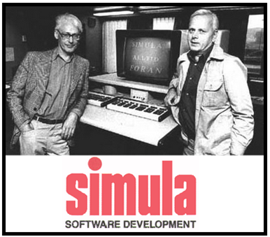

1. ¿Quién creó la POO, cuándo y por qué?
La Programación Orientada a Objetos fue creada por **Ole-Johan Dahl** y **Kristen Nygaard** a principios de los años 60 mientras trabajaban en el Centro de Cómputo Noruego en Oslo. El propósito original de la POO era facilitar la simulación de sistemas complejos, específicamente para proyectos militares y simulaciones económicas. El lenguaje de programación que introdujo estos conceptos fue **Simula 67**, desarrollado en 1967, que introdujo las ideas de objetos y clases.
Con el tiempo, este paradigma se expandió y fue adoptado por lenguajes más modernos como **Smalltalk**, **C++**, **Java** y **Python**, ayudando a los desarrolladores a crear software más estructurado, modular y mantenible.
2. ¿Para qué nos ayuda la POO?
La Programación Orientada a Objetos nos ayuda a organizar mejor nuestro código mediante la creación de **objetos** que simulan entidades del mundo real o conceptos abstractos. Al utilizar la POO, obtenemos múltiples beneficios como:
- Reutilización de código: A través de la herencia y los métodos, podemos reutilizar comportamientos comunes en diferentes partes del software, evitando la duplicación de código.
- Modularidad: Al dividir el programa en pequeñas piezas (clases y objetos), es más fácil de mantener y entender.
- Escalabilidad: Facilita el crecimiento y evolución del software a medida que se amplían las funcionalidades sin afectar el código existente.
- Mantenibilidad: Al encapsular datos, protegemos la integridad de los mismos, facilitando el manejo de errores y cambios en el software.
3. Clases
Una **clase** es el plano o molde a partir del cual se crean objetos. Define atributos (propiedades) y métodos (acciones) que tendrán los objetos. Por ejemplo, una clase Persona puede tener atributos como nombre y edad, y métodos como hablar o caminar.
4. Objetos
Los **objetos** son instancias de una clase. Es decir, cuando se crea un objeto a partir de una clase, ese objeto tendrá los atributos y métodos definidos en la clase. Por ejemplo, si la clase es Coche, un objeto sería un coche específico como un **Coche rojo modelo Toyota**.
5. Encapsulamiento
El **encapsulamiento** se refiere a ocultar los detalles internos de los objetos y exponer solo lo necesario. Esto se hace mediante modificadores de acceso, como privado y público, para proteger los datos y evitar que se manipulen de manera incorrecta desde fuera del objeto.
6. Herencia
La **herencia** permite que una clase hija herede los atributos y métodos de una clase padre. Esto facilita la reutilización de código y la creación de relaciones jerárquicas. Por ejemplo, una clase Animal puede tener una subclase Perro, que hereda comportamientos como comer y dormir.
7. Polimorfismo
El **polimorfismo** permite que un mismo método tenga diferentes comportamientos según el objeto que lo invoque. En otras palabras, un mismo mensaje puede producir diferentes respuestas. Por ejemplo, el método sonido() puede generar diferentes sonidos dependiendo de si es invocado por un objeto de la clase Perro o Gato.
8. Abstracción
La **abstracción** es el proceso de reducir la complejidad al enfocarse solo en los aspectos esenciales de un objeto, ignorando los detalles no relevantes. Un ejemplo sería la clase Vehículo, que solo define lo básico (como mover), sin importar si es un coche, moto o barco.